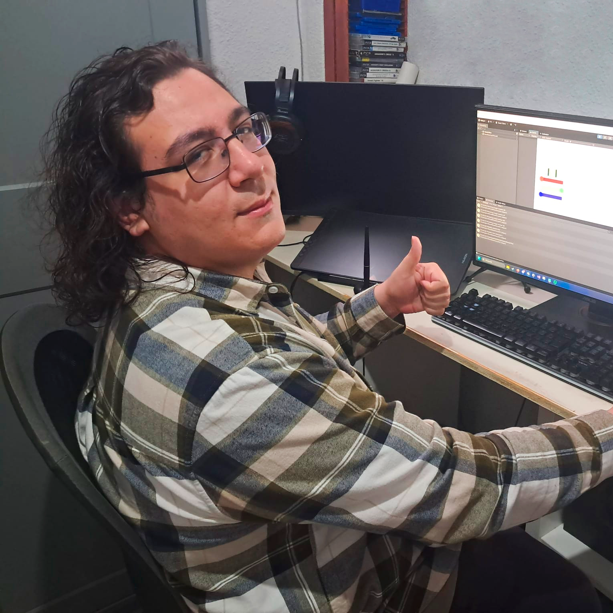

Mi nombre es Pablo Soler Montesinos, entre muchas cosas como, editor de videos, imagenes y sonido, modelador y animador 3d y programador web, soy un programador y diseñador de videojuegos con un grado superior y master en esta materia. En este portfolio podran ver varios proyectos en los que he trabajado, tanto videojuegos, como otros proyectos mas miscelaneos.
En estos proyectos he trabajado en equipo tanto con gente de mi misma especialidad como artistas,compositores y diseñadores de sonido. Me comunico bastante con otros compañeros de proyecto para asegurarme que no solo que estamos cumpliendo nuestros objetivos si no tambien para que queden claro cuales son, para evitar tener que hacer arreglos de mas. Tambien en mis años de formación he sido un apoyo para mucho de mis compañeros, resolviendo dudas y explicando aquello con lo que tuviesen mas dificultades.
Mi experiencia laboral en el mundo de los videojuegos ocurre principalmente en los meses que estuve en Made In Verse, una empresa que principalmente se dedica a hacer espacios interactivos para crear presentaciones para sus distintos clientes. En mi caso me pusieron a trabajar en un juego llamado Eco Defender, un juego de VR hecho en Unreal Engine. Ahi mis tareas al principio eran ayudar con los visuales del juego pero mas adelante me dedique a hacer un port de movil del juego, aparte de añadirle nuevo contenido, incluyendo la creacion de modelos nuevos usando Blender. Tambien tengo experiencia laboral en programación web,en The Workshop y NTT Data, donde obtuve muchas de mis buenas practicas tanto de comunicación en trabajo en grupo como de programación, que lleve a mis proyectos propios hechos en Unreal o principalmente Unity.
Llevo años haciendo proyectos , desde videos e imagenes usando los programas de adobe, como Premiere, Photoshop, After Effects y en menor medida Ilustrator,pixel art con AseSprite, modelos y animaciones con Blender, y mas principalmente creando juegos en Unity, apoyandome en estas herramientas para crear visuales para estos proyectos. Normalmente para estos proyectos he estado trabajando con mas gente, ya sea en trabajos de fin de grado, como en game jams, tanto internacionales como las de "Game Maker Tool Kit", como locales, como la "MalagaJam".